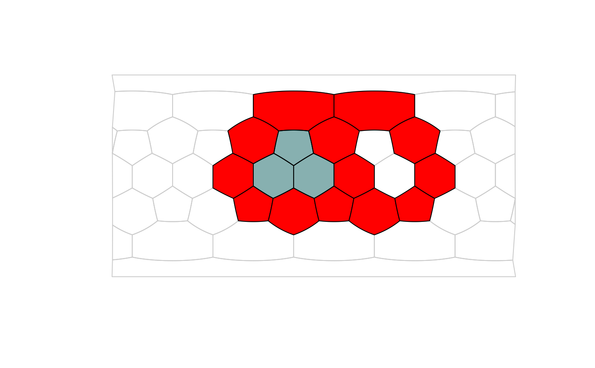
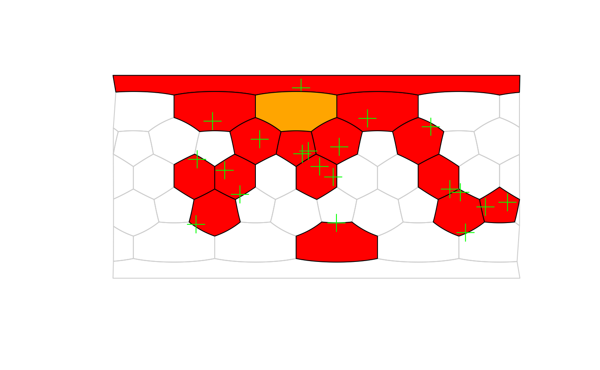

Proportion of gap cells
Usage
gappiness(x, s, ...)
# S4 method for class 'character,trigrid'
gappiness(x, s, exclude = NULL, full = FALSE)
# S4 method for class 'matrix,trigrid'
gappiness(
x,
s,
long = NULL,
lat = NULL,
duplicates = FALSE,
plot = FALSE,
plot.args = NULL,
full = FALSE,
exclude = NULL
)Arguments
- x
The list of faces that are part of the shape.
- s
Spatial discretization strucutre (currently only
trigrid-class icosahedral grid).- ...
Arguments passed to class-specific methods.
- exclude
The list of faces that is to be excluded from the calculation
- full
logical, should only the estimate (FALSE) be returned, or additional data as well?(TRUE).- long
character, column name of the longitudes.- lat
character, column name of the latitudes.- duplicates
logical, should identical coordinates be included in the calculation (default isFALSE)- plot
Logical, should the result be plotted? Will plot over active plot (as in
add=TRUE), if here is any.- plot.args
List arguments passed to the plotting function:
plot.
Details
Gappiness refers to proporion of area that are covered by the internal gaps that defined by a set of discretized cells or a point set that covers some cells in a discretization structre.
Examples
# 1. Only cells
# create a grid
hex <- hexagrid(2, sf=TRUE)
# an example shape
shape <- paste0("F", c(4, 5, 11, 13, 15, 21, 24, 26, 32, 33, 34, 35, 36))
plot(hex, border="gray80")
plot(hex, shape, col="red", add=TRUE)
# the gappiness
gap <- gappiness(shape, hex, full=TRUE)
gap
#> $estimate
#> [1] 0.2777778
#>
#> $holes
#> F12 F14 F23 F25 F22
#> 1 2 1 2 1
#>
#> $occupied
#> [1] "F4" "F5" "F11" "F13" "F15" "F21" "F24" "F26" "F32" "F33" "F34" "F35"
#> [13] "F36"
#>
# plot the first gap
plot(hex, names(gap$holes[gap$holes==1]), col="#00555577", add=TRUE)

# points
set.seed(7)
rand <- icosa::rpsphere(20, output="polar")
occ <- locate(hex, rand)
plot(hex, border="gray80")
plot(hex, occ, col="red", add=TRUE)
points(rand, col="green", pch=3, cex=2)
# gappiness
gap <- gappiness(occ, hex, full=TRUE)
plot(hex, names(gap$holes), col="orange", add=TRUE)
